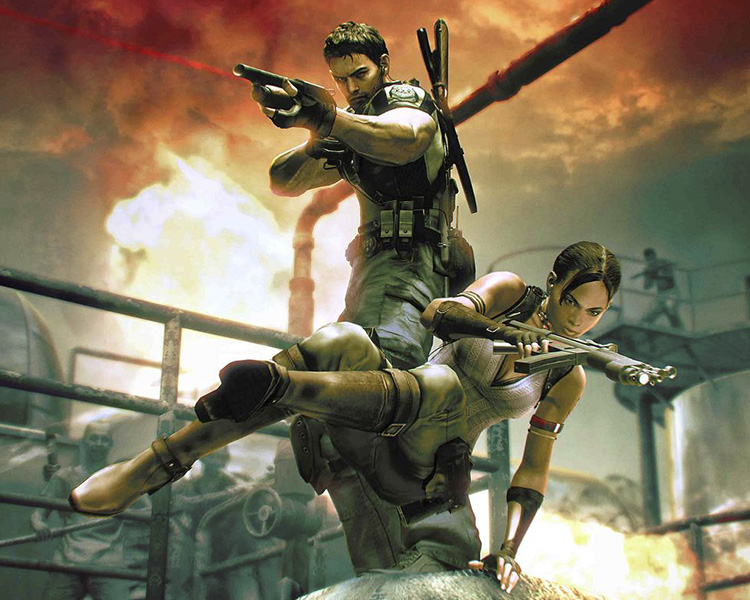
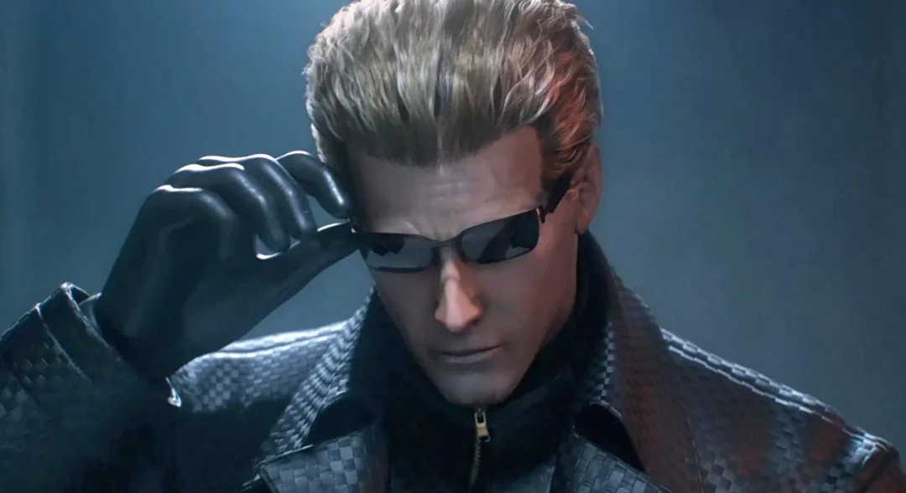
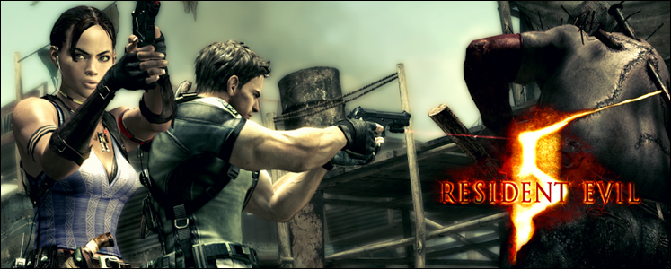

Visão geral

Resident Evil 5 coloca Chris Redfield em uma missão na África, investigando um novo surto biológico. Ao seu lado está Sheva Alomar, agente da B.S.A.A., formando uma dupla de protagonistas.
O jogo mantém a câmera sobre o ombro de RE4, mas aumenta o foco em ação cooperativa, com muitos confrontos intensos contra infectados e criaturas gigantes.
Gameplay e mecânicas
Pontos principais do gameplay:
- Modo cooperativo (local e online) como grande destaque;
- Divisão de inventário entre Chris e Sheva;
- Mais munição e foco em confrontos diretos;
- Chefes gigantes e uso de cenários com bastante ação.
Embora ainda haja elementos de horror, muitos fãs consideram RE5 o início da fase mais voltada para ação da franquia.
História e atmosfera
A narrativa explora o passado de Chris, a relação com Jill Valentine e a ameaça representada por Albert Wesker, um dos vilões mais icônicos da série.
A ambientação africana traz vilarejos, ruínas, laboratórios e áreas industriais, com forte presença de luz solar, diferente do clima mais noturno dos primeiros jogos.
Análise
Resident Evil 5 é lembrado por ser um jogo muito competente em termos de ação cooperativa, com boa jogabilidade e gráficos impressionantes para a época.
Ao mesmo tempo, foi criticado por se afastar bastante do terror clássico da franquia, assumindo de vez um tom de “ação blockbuster”.
Vendas aproximadas: mais de 15 milhões de cópias (somando relançamentos).
Impacto: Por muito tempo foi o jogo mais vendido da Capcom.
Curiosidades
- RE5 traz confrontos decisivos contra Wesker e fecha alguns arcos antigos.
- Foi muito elogiado no modo cooperativo online.
- Teve DLCs importantes, como “Lost in Nightmares” e “Desperate Escape”.
Galeria de imagens


